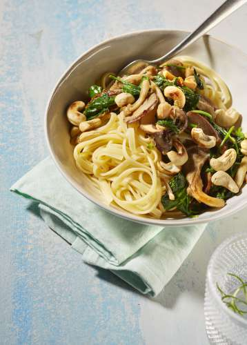

Linguine met spinazie en kruidige champignonmix

Ingrediënten
- 250 g oesterzwammen
- 200 g champignonmix met kruiden
- 200 g verse spinazie
- 2 sjalotten
- 1 teentje knoflook
- 2 dl plantaardig alternatief voor room
- 400 g linguine
- 2 eetl. cashewnoten
- 2 eetl. olijfolie
- 1 eetl. Italiaanse kruidenmix
- zwarte peper (molen)
- zout
Voedingswaarde per persoon:
Energie 575 kcal
Vetten 18.7 g
Verzadigde vetzuren 2.5 g
Koolhydraten 79.9 g
Suikers 4.6 g
Vezels 5.6 g
Eiwitten 19.1 g
Zout 0.1 g
Voorbereiding
10 min
- Scheur de oesterzwammen in reepjes.
- Snipper het knoflook en de sjalotten fijn.
- Rooster de cashewnoten goudbruin in een pan met antiaanbaklaag, zodner vetstof. Hak Grof.
Bereiding
20 min
- Kook de linguine gaar in lichtgezouten water (kooktijd : zie verpakking). Giet af en meng er 1 eetl. olijfolie onder.
- Verhit intussen 1 eetl. olijfolie in een pan en bak het knoflook en de sjalotten glazig. Voeg de oesterzwammen en de champignonmix toe en bak even. Kruid met zwarte peper en zout.
- Voeg de spinazie toe aan de paddenstoelen en laat slinken. Laat het vocht volledig verdampen. Voeg daarna het roomalternatief toe. Kruid met de Italiaanse kruiden, zwarte peper en zout.
Afwerking
Meng de paddenstoelen en spinazie onder de linguine. Verdeel de pasta over de borden en werk af met de cashewnoten.
Tip
Door de ingrediënten en de bereidingswijze licht aan te passen kan u dit recept ook tegelijkertijd klaarmaken voor uw peuter of baby.Bereiding: 15 min.
- Kook 30 g linguine 10 min. in water. Voeg na 5 min. 75 g spinazie en 75 g champignons toe. Giet af.
- Mix fijn en meng er 1 koffiel. plantaardige olie onder. Breng op smaak met 1 mespuntje peper en Italiaanse kruiden.
Drankensuggestie
Bier
- Tempelier
- Amberbier
Wijn
- Vintense Syrah
- Alcoholvrije wijn